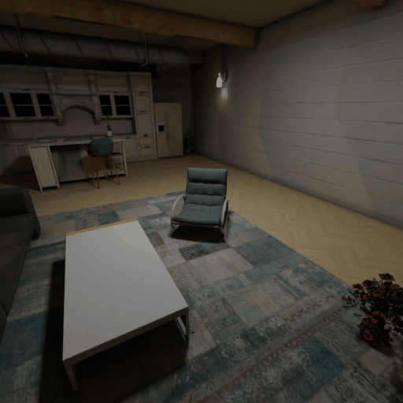
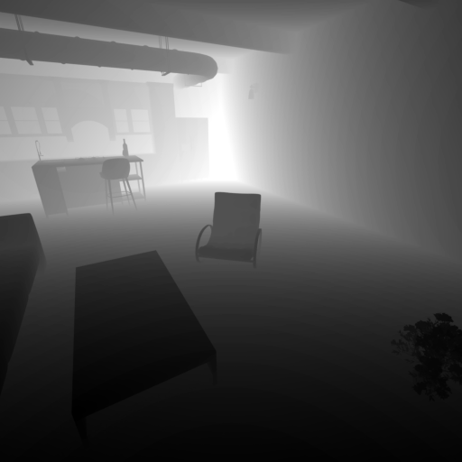
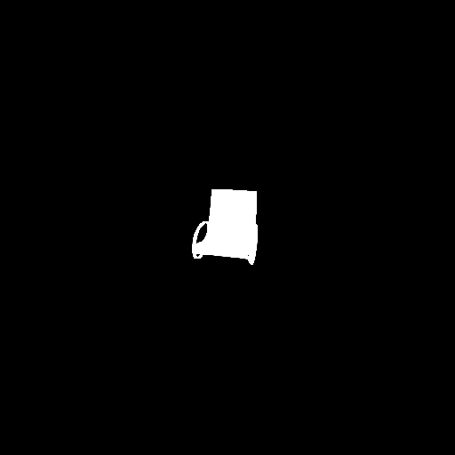

G-buffer Inputs
Our EDL-relighting SVD takes five G-buffer media as input: RGB, depth, normal, albedo, and mask.





In immersive VR environments, users may miss crucial story events that occur outside their field of view. To mitigate this problem, we propose a method and framework for enhancing users' attention in virtual environments by autonomously identifying significant events and adjusting environment lighting via latent video diffusion models (Video-LDMs) to achieve controllable video relighting accordingly.
Our method accepts video frames and an English text script as input, detects events in the script using large language models (LLMs), then extracts the event arguments with corresponding G-buffer frames. Given the localized event and its mask, our system makes it more obvious to the user by automatically adjusting lighting by leveraging pre-trained diffusion model. Through a user study, we validate that our approach improves users' sense of presence within and memory of virtual environments. Our proposed framework is versatile and can be applied to scenarios like creating cinematic videos and guiding users in interactive games.
Our EDL-relighting SVD takes five G-buffer media as input: RGB, depth, normal, albedo, and mask.
The U-Net processes these concatenated inputs to generate relit video frames.
We qualitatively compare the relighting quality of ScribbleLight, IC-Light, and ours using language model generated mask or scribbles.

There's a lot of excellent work that was introduced around the same time as ours.
ScribbleLight introduces an mask guidance image relighting diffusion model.